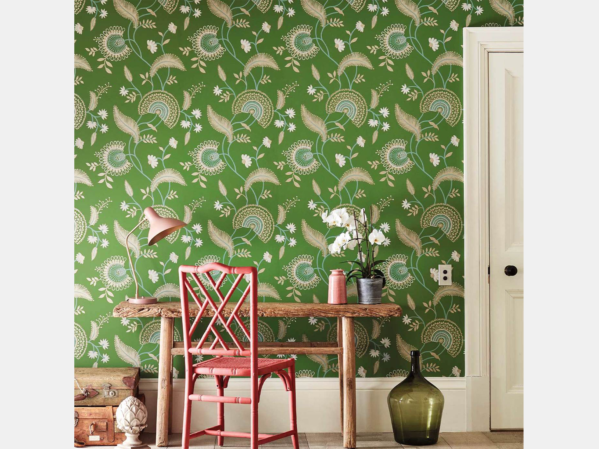
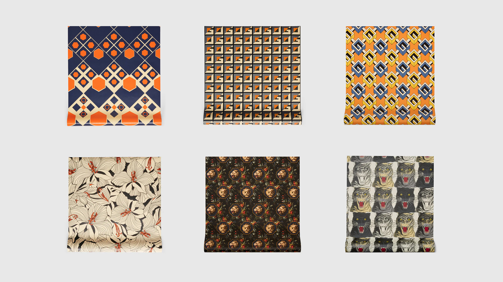
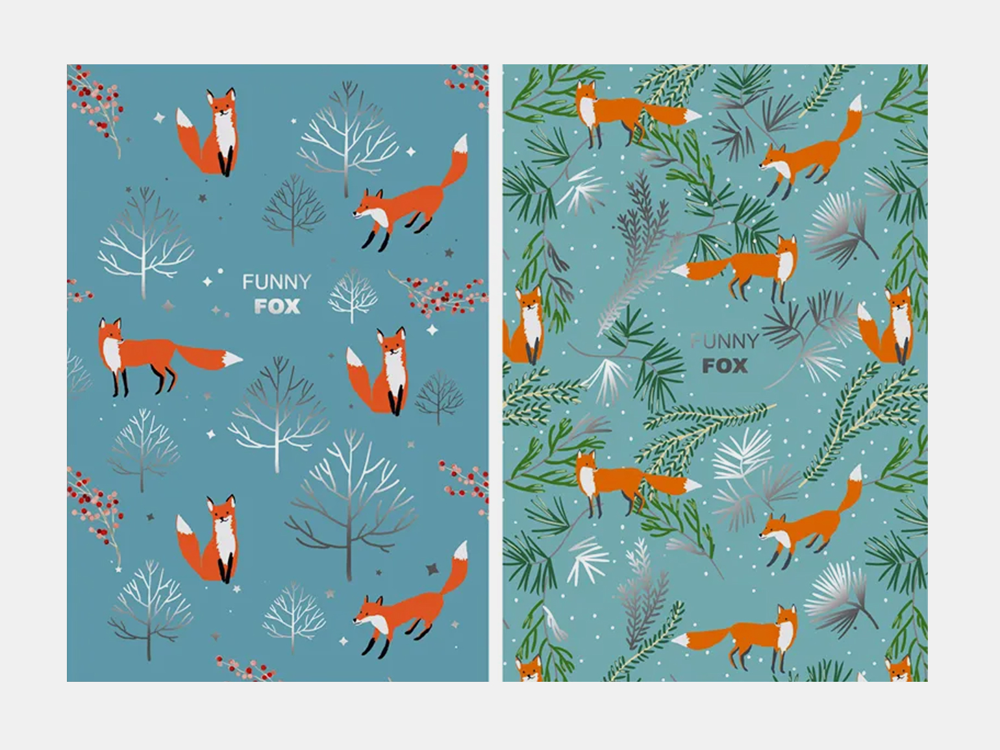
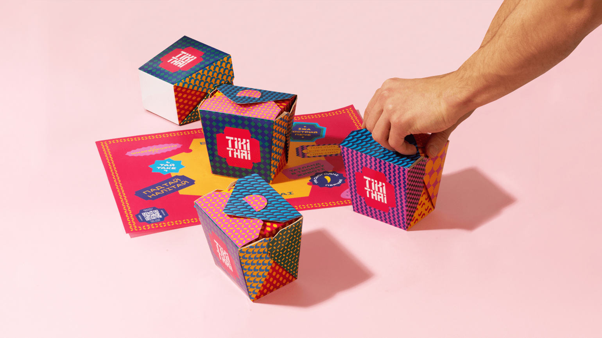
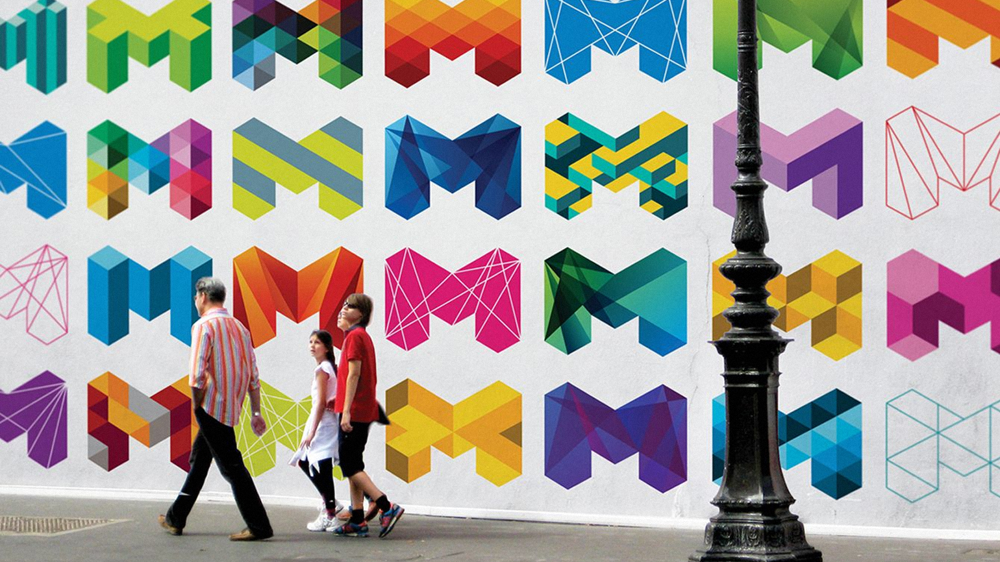
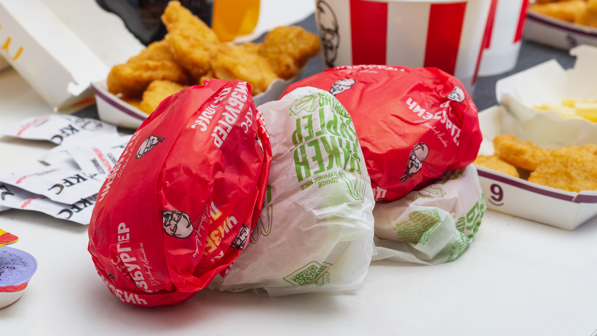
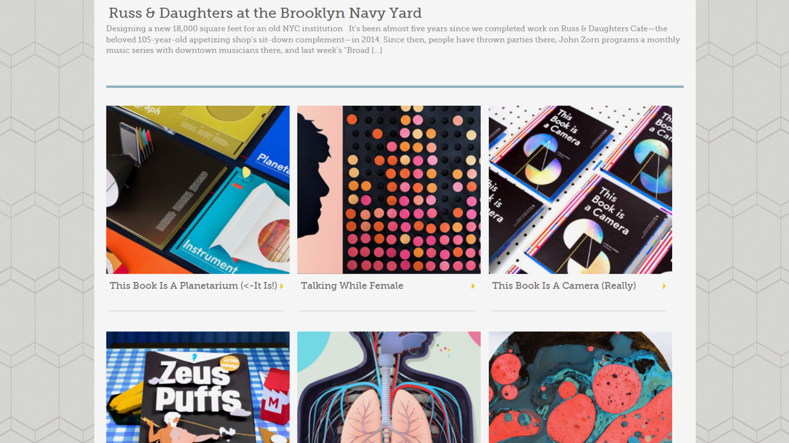
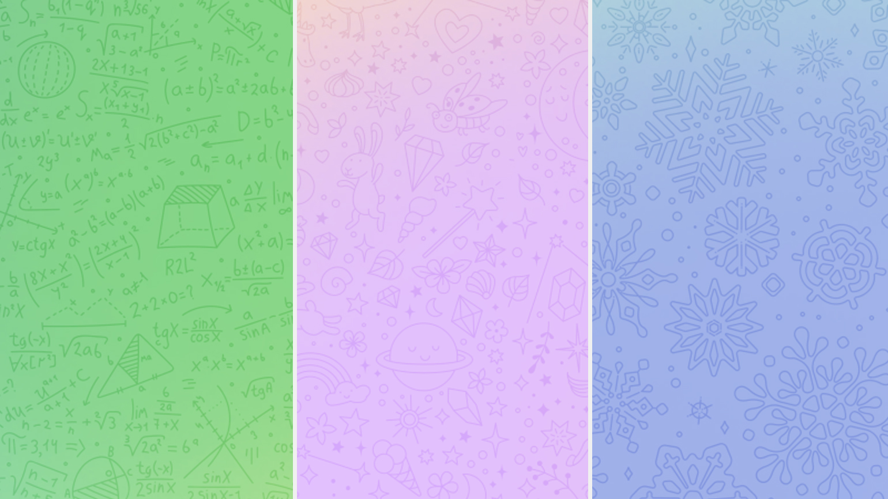
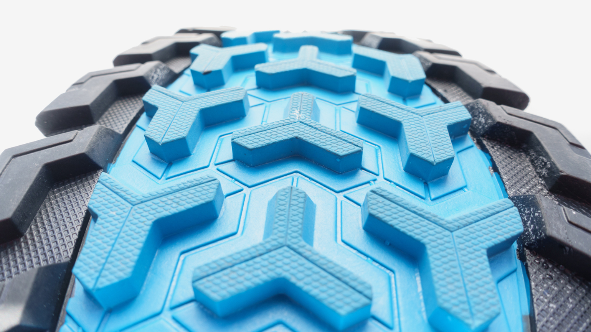
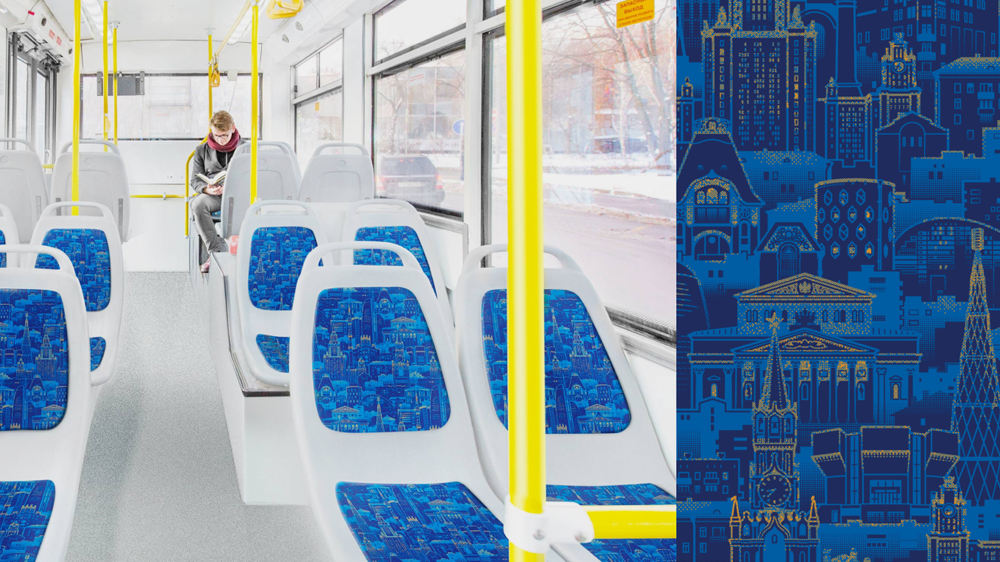

В повседневном дизайне
С паттернами в обычной жизни мы встречаемся каждый день, часто даже не обращая на них внимание. Например, они популярны в дизайне обоев — рисунок можно продублировать во всю длину и ширину рулона, при этом во время поклейки большой площади стены место стыка бумажных полос будет почти незаметным.
Модный дом Gucci, известный в первую очередь одеждой и аксессуарами, также выпускает обои со своими паттернами.
Кроме того, что паттерны стыкуются без швов, у них есть ещё одно свойство — рисунок можно обрезать в любом месте, при этом он по-прежнему будет выглядеть хорошо. Поэтому паттерны часто используют в оформлении скетчбуков, блокнотов, тетрадей и открыток. При создании дизайна с паттернами для полиграфии можно не волноваться за вылеты под обрез.
В брендинге
В брендинге и айдентике чаще всего паттерны — дополнительный элемент фирменного стиля. Например, для кафе Tikithai была разработана линейка из шести узоров, которые не связаны с фирменным знаком, но удачно его дополняют. Поскольку образец можно обрезать под любым углом, это стало удачным решением для коробки с большим количеством элементов, у каждого из которых — свой рисунок.
Иногда паттерн может заполнить весь логотип — такое решение использовано в городской айдентике Мельбурна. Дизайнеры хотели показать динамичность разных городских инициатив города, который находится в постоянном развитии. Это хороший графический ход для динамичного дизайна, который не боится выглядеть по-разному, показывая разные стороны одного и того же продукта.
Но есть и более скромное использование этого приёма. Оно построено на тех же принципах, что лежат в основе подарочной бумаги: лист с рисунком будет смотреться хорошо, даже если нельзя заранее предсказать форму и размер продукта. В брендированную бумагу заворачивают, например, сэндвичи, обувь внутри коробки, предметы одежды. Иногда для такого паттерна разрабатывают собственный узор, но часто это скромно дублируемый или даже полупрозрачный логотип. Обрезать лист можно в любом месте, и даже смятым он не будет выглядеть неопрятно.
В дизайне интерфейсов
В дизайне интерфейсов паттерны заменяют собою сплошную заливку фона. Это делает оформление ярче и разнообразнее, задаёт ему характер и динамику.
Раньше паттернами часто заполняли фон веб-страниц, поскольку было невозможно предсказать, каким будет разрешение экрана пользователя. Образец размножался и полностью закрывал поверхности как на малых, так и на больших экранах. При этом из-за небольшого размера изображения паттерна такой фон загружался быстро, что было важно при небольших скоростях интернет-соединений.
Современный дизайн адаптируется под разные расширения, а технологии позволяют заливать фон как достаточно крупными изображениями, так и делать разноцветные заливки средствами HTML, не используя графические файлы. Поэтому сегодня повторяющиеся паттерны дизайнеры выбирают редко. Чаще всего их используют для заливки малозначительных элементов дизайна, чтобы не оставлять их «пустыми», но и не привлекать к ним большого внимания.
Сейчас по-прежнему можно встретить сайты с паттерном на фоне, правда, они вызывают ощущение «ретро». Яркий фон может отвлекать от серьёзного содержания, но подобный подход уместен, например, в блогах.
По этому же принципу работает и подложка в мессенджерах. Фон делает страницу живой — цвет приятно дополняет диалог из коротких, простых по форме сообщений.
В промышленном дизайне
Часто паттерны выполняют прикладную функцию, например рельефный рисунок на шинах и подошве обуви улучшает сцепление с дорогой.
В общественном транспорте паттерны гораздо предпочтительнее однотонной обивки, поскольку узор помогает скрыть грязь и царапины. Например, для московского транспорта в Студии Артемия Лебедева разработали паттерн со знаковыми зданиями Москвы. Его, ко всему прочему, ещё и интересно разглядывать во время поездки.
